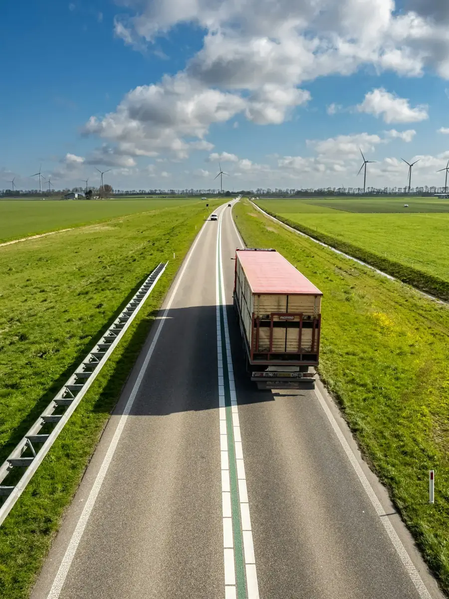
01Transportrecht
Een lading die beschadigd aankomt, een levering die te laat is, een vrachtbrief die discussie geeft. Voor vervoerders en voor wie iets liet vervoeren.
Vraag hieroverIk ben Paul Bruyns, advocaat aan de balie van Antwerpen. Vanuit mijn kantoor in Westmalle help ik mensen en bedrijven uit Malle en de Kempen bij verkeer, aansprakelijkheid en verzekeringen, bij transport, en bij vragen over familie en eigendom.
Dit zijn de rechtsdomeinen waarin ik werk. Klik op een domein en uw vraag staat al klaar in het formulier.

01Een lading die beschadigd aankomt, een levering die te laat is, een vrachtbrief die discussie geeft. Voor vervoerders en voor wie iets liet vervoeren.
Vraag hierover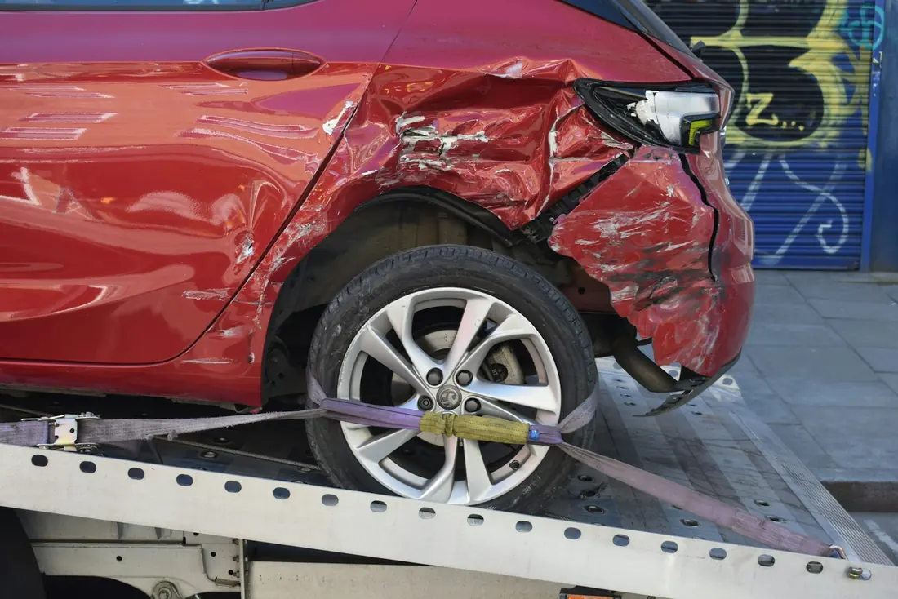
02Een aanrijding, een discussie over wie in fout was, een zaak voor de politierechtbank.
Vraag hierover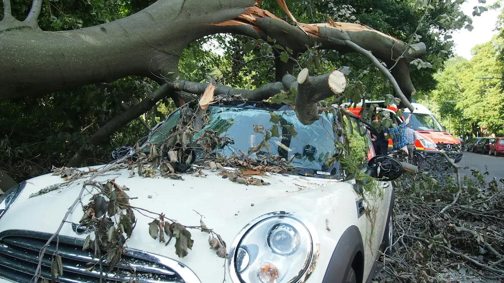
03Iemand anders veroorzaakte schade aan u of uw eigendom. Of u wordt zelf aansprakelijk gesteld.
Vraag hierover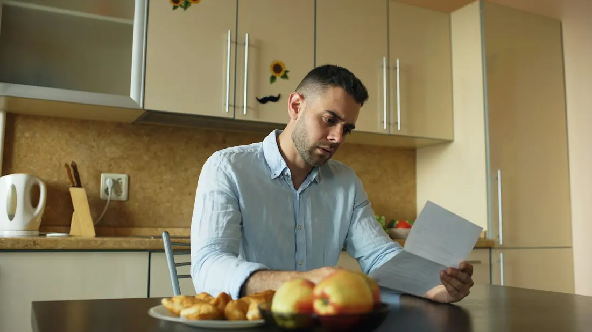
04Uw verzekeraar weigert te betalen, of biedt veel minder dan de schade. We lezen samen uw polis.
Vraag hierover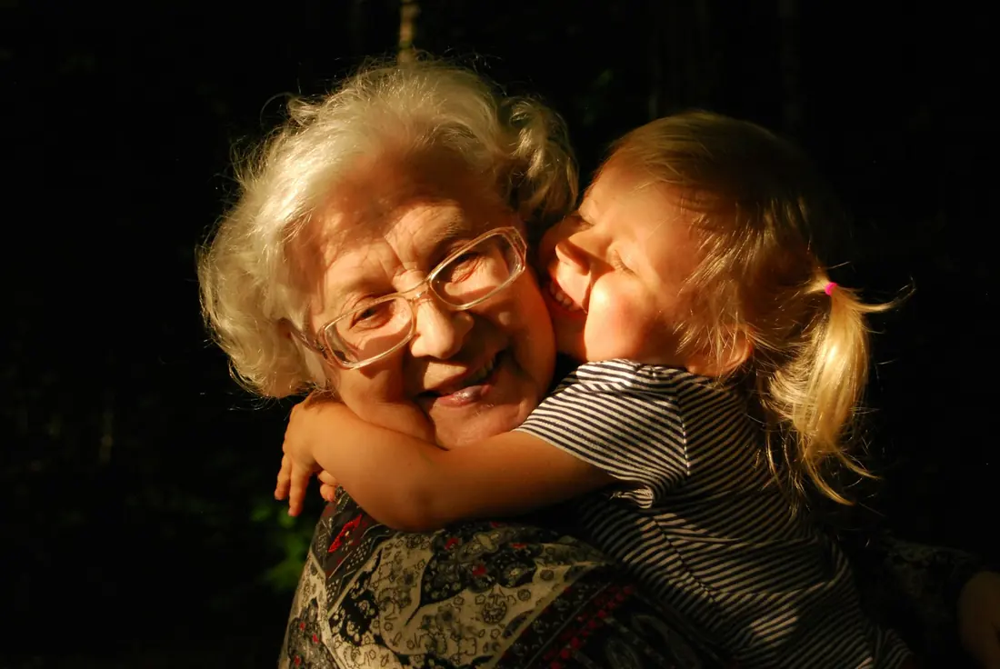
05Vragen over familie, huwelijk en scheiding, afstamming, of de bescherming van iemand die niet meer voor zichzelf kan zorgen.
Vraag hierover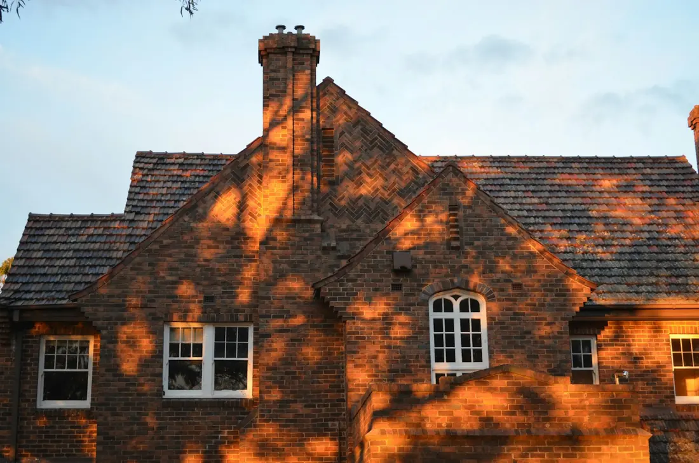
06Eigendom, mede-eigendom, een erfdienstbaarheid of een discussie met de buren over een grens of een haag.
Vraag hieroverGeen probleem. Twee korte vragen en u weet het.
Naar de keuzehulpJuridische woorden hoeft u niet te kennen. Kies wat bij uw situatie past.
Kort wat er gebeurde. U hoort wanneer u langs kan komen aan de Berkenlaan.
U brengt mee wat u hebt: brieven, foto's, uw polis, het aanrijdingsformulier. We overlopen het rustig.
Welke stappen er zijn, wat ze ongeveer kosten en of uw rechtsbijstandsverzekering tussenkomt.
Geen glazen kantoortoren in de stad, maar een kantoor in een rustige straat, op een kilometer van de abdij.
Mijn kantoor ligt aan de Berkenlaan in Westmalle. Ik ben ingeschreven aan de balie van Antwerpen, en ik werk voor particulieren en bedrijven uit Malle, Zoersel, Schilde, Brecht en de rest van de Kempen.
Wie bij mij komt, heeft meestal iets meegemaakt: een ongeval, schade, een verzekeraar die niet wil betalen. Dan wil u vooral weten waar u aan toe bent. Dat zeg ik u eerlijk, ook als het antwoord niet is wat u hoopte.

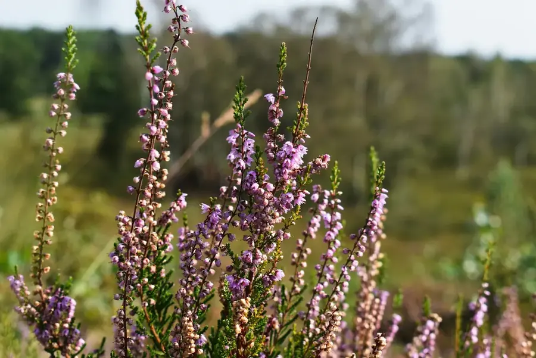
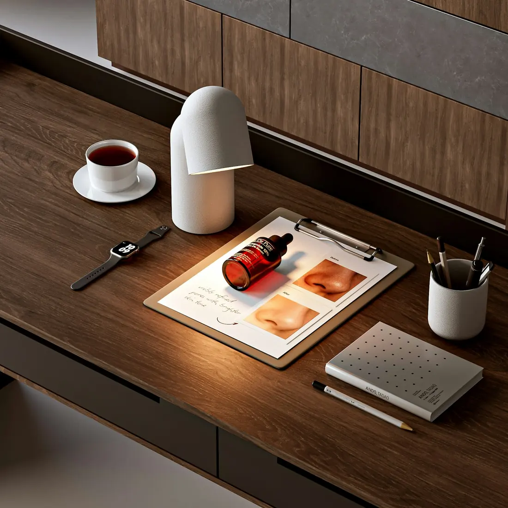
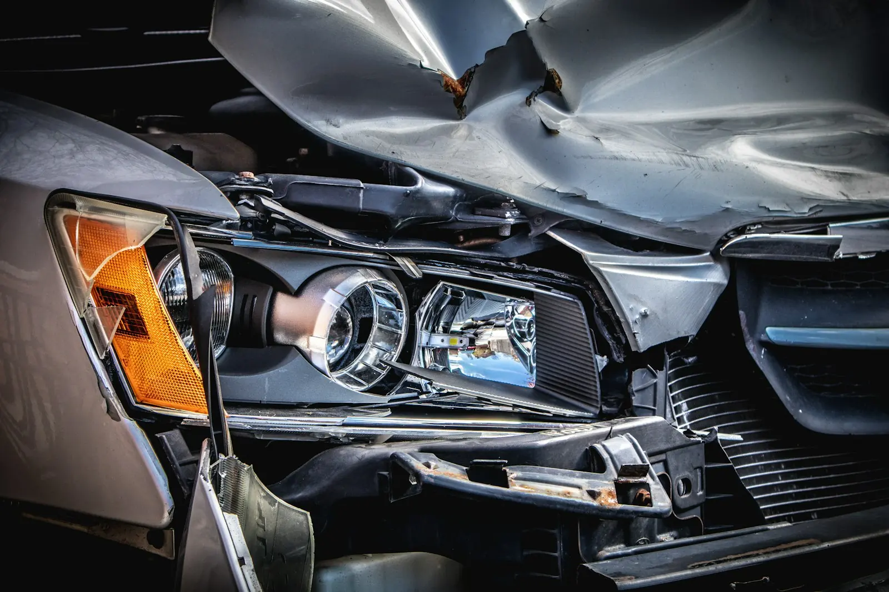
Een aanrijding gaat snel, en achteraf weet u niet meer precies wat er gebeurde. Deze vier dingen helpen later het meest.
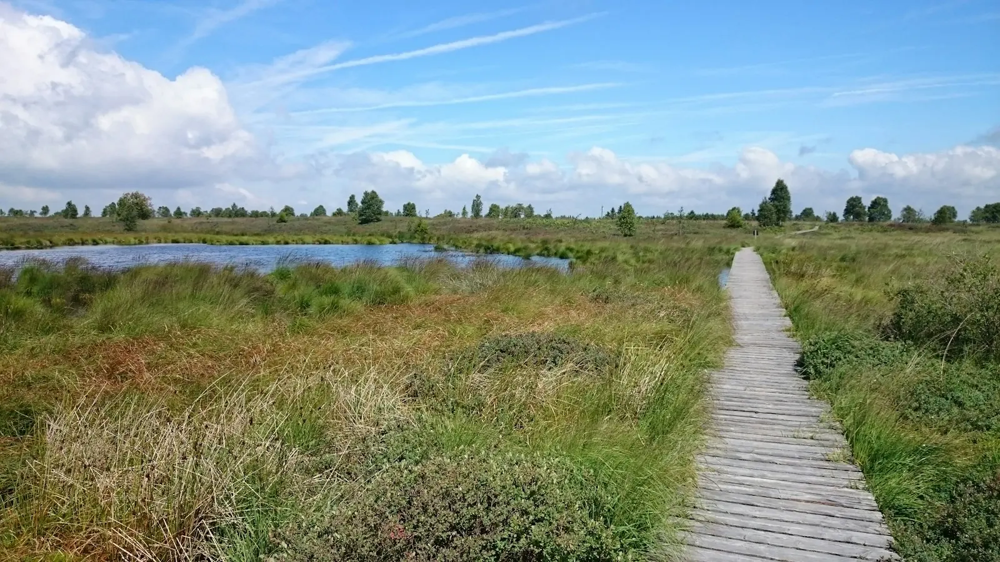
Een advocaat in Westmalle vindt u meestal via iemand die u kent. Op Google gaven cliënten Paul Bruyns de hoogste score.
Staat uw vraag er niet bij? Bel naar 03 309 34 72 of stuur een mail.
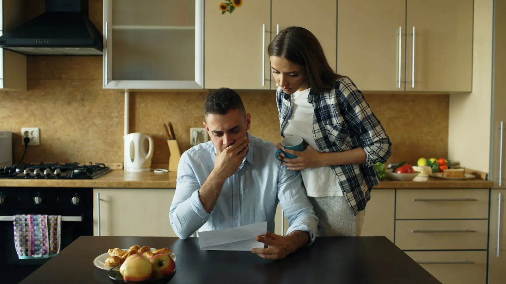
Vaak wel, zeker bij verkeer en schade. Komt het tot een procedure, dan mag u uw advocaat zelf kiezen. Breng uw polis mee, dan bekijken we samen wat gedekt is.
Dat hoort u vooraf, aan de telefoon. Na het gesprek weet u ook wat de volgende stappen ongeveer zouden kosten, zodat u kan beslissen of u verder wil gaan.
Teken niet meteen. Een voorstel is een begin van een gesprek. Laat het eerst nakijken, dan weet u of het in verhouding staat tot uw schade.
Ja. Zeker bij transportrecht gaat het vaak om bedrijven: een vervoerder, een verlader, een klant die schade heeft aan een levering.
Helemaal niet. Westmalle ligt midden tussen Zoersel, Brecht, Schilde en Oostmalle. En veel kan ook gewoon telefonisch of per mail.
Alles wat met uw zaak te maken heeft: brieven, mails, foto's, een aanrijdingsformulier, uw verzekeringspolis. Liever te veel dan te weinig. Gebruik gerust de keuzehulp hierboven voor een lijstje.
Bel, stuur een berichtje of vul het formulier in. Ik neem zelf contact met u op.
Advocaat Paul Bruyns
Berkenlaan 5, 2390 Westmalle (Malle)
Balie Antwerpen
Ik maakte deze demo voor u om te tonen wat er kan. Na een kort gesprek maak ik er iets veel persoonlijkers van, helemaal naar uw wens.
Vrijblijvend. Ik kom langs of we bellen.
Op maat, op uw eigen domein.
Geen voorschot. U betaalt pas als alles klaar is.
Hosting, domeinnaam en kleine wijzigingen, zoals nieuwe openingsuren.
Omdat een voorbeeld meer zegt dan een mail. Zo ziet u meteen wat er kan, en het kost u niets.
Nee. Het gesprek is vrijblijvend. Vindt u het niks, dan is het daarmee gedaan.
Na ons gesprek staat uw site binnen 10 tot 14 dagen online.
Zeker. Uw domeinnaam kan gewoon blijven, de nieuwe site komt in de plaats van de oude.
Nee, dat doe ik op basis van ons gesprek. Eigen foto's zijn mooi meegenomen, maar niet nodig om te starten.